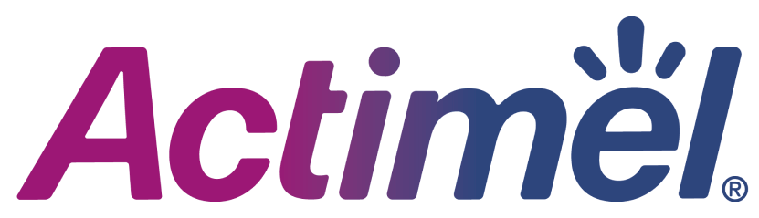

Концепция продуктового
сайта Actimel

Задачи тендера:
Разработать концепцию необычного и запоминающегося сайта, подготовить его
макет, демонстрирующий дизайнерские решения.
Разработать проект контента, который транслирует ценности бренда, вовлекает
аудиторию, знакомит с историей и продукцией.
Подготовить SEO-решения, которые помогут вывести сайт бренда на ведущие позиции
в поисковиках.
Из маленьких шагов складывается целая жизнь
Поведение покупателей меняется в сторону осознанного потребления. Мы понимаем, что от наших ежедневных
решений зависит качество собственной жизни. Мы больше не готовы бездумно верить рекламным слоганам — теперь
мы изучаем этикетки, разбираемся в КБЖУ и предпочитаем рациональный подход.
Мы знаем, что можем иметь сильное и здоровое тело долгие годы. Но для этого надо заботиться о нем каждый день — делать маленькие шаги. И один из таких шагов — регулярное употребление Actimel.
Мы знаем, что можем иметь сильное и здоровое тело долгие годы. Но для этого надо заботиться о нем каждый день — делать маленькие шаги. И один из таких шагов — регулярное употребление Actimel.
Максимум пользы
Сайт Actimel будет впечатлять необычным дизайном и привлекать глубиной контента. Сайт будет разделен на
тематические блоки, в которых мы аккумулируем максимум информации — текстовой и визуальной.
- Бренд
- Ключевые ценности
- История
- Исследования
- Продукция
- Ассортимент
- Ингредиенты
- Производство
- Где купить
- Здоровье
- Иммунитет
- Укрепление иммунитета
- Правильное питание
- Взаимодействие
- Вопрос/Ответ
- Подкаст
- Видео
- Конкурсы
Впечатляющий дизайн — способ привлечь новую аудиторию
Мы предлагаем выделиться в онлайн-пространстве с помощью яркого и необычного дизайна. Посетитель сайта сразу
попадает в бескрайнее море, в котором видит покачивающуюся на волнах бутылочку Actimel. Если ее приблизить,
то можно попасть внутрь и стать одним из 10 млрд полезных лактобактерий.
Таким дизайном мы решаем несколько задач:
- Визуально показываем, насколько много полезных ингредиентов содержит Actimel.
- Пробуждаем в посетителях яркие эмоции, которыми они захотят поделиться в соцсетях и мессенджерах
- Привлекаем внимание к сайту с интересной механикой, который захотят посмотреть много пользователей.
Лидеры мнений
Благодаря нашей платформе 24LIFE по коллаборации с блогерами и инфлюенсерами мы подберем сильных и
влиятельных экспертов. Они смогут эффективно продвигать продукцию и сайт бренда в соцсетях и на
видео-площадках.
Это положительно скажется на позициях сайта Actimel в поисковой выдаче и привлечет новую аудиторию.
Растим лояльную аудиторию
Мы запустим познавательный подкаст для детей старше 10 лет «Как вырасти красивым и сильным. Лайфхаки для тинейджеров»
В нем будем рассказывать о здоровом образе жизни и правильном питании. Для этого приглашать известных
блогеров и врачей, которые смогут затронуть важные для подростков темы:
- — как правильно питаться;
- — как контролировать вес;
- — зачем следить за пищеварением;
- — как бороться с прыщами;
- — что такое гормоны;
- — почему наше тело меняется;
- — как связаны качество еды и кожа;
- — и многие другие.
Спасибо